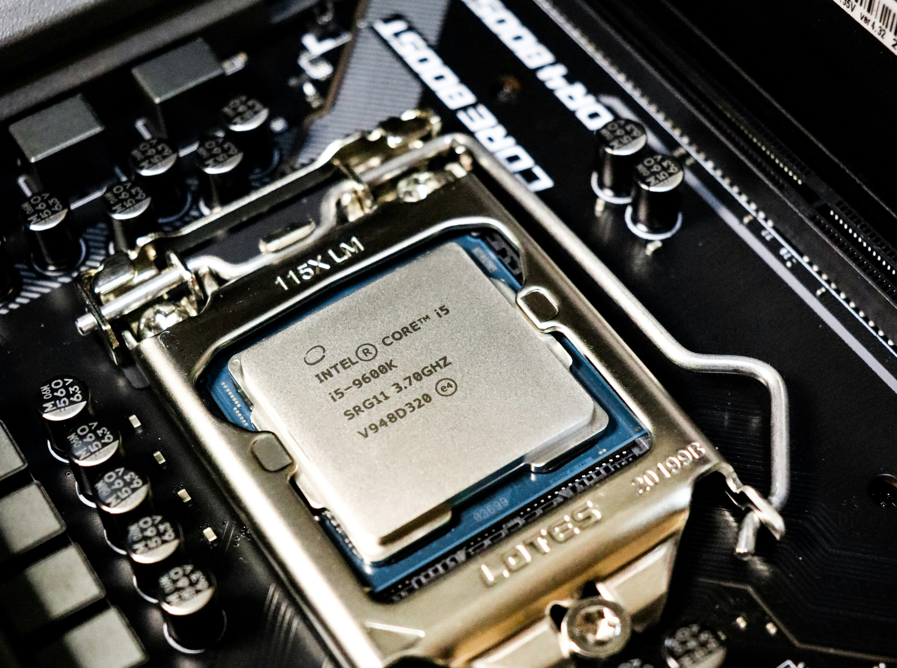

Explore my analysis of the Stack Overflow Developer Survey, where I dissect extensive data to uncover trends in developer salaries, preferred technologies, and career satisfaction across the global tech community.

This project involves using Python. With the FIFA 21 player dataset, I focus on uncovering insights about football players' physical attributes and economic values within the game. The script is designed to clean, transform, and visually represent data to facilitate understanding of player characteristics

This Python-based project utilizes Selenium and BeautifulSoup to scrape data from Amazon's listings of Intel processors. It extracts details such as product titles, prices, and user reviews. The data is then compiled and saved into a CSV file, facilitating easy access and analysis.